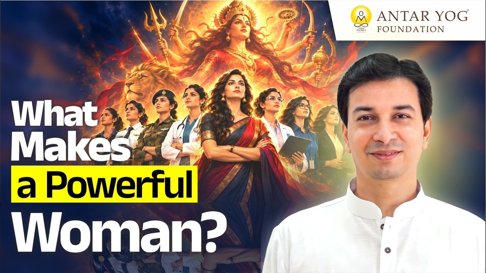

यदि इस देश में आगे चलकर महिलाओं को नेतृत्व करना है, राज्य करना है, तो उन्हें क्या सीखना होगा? महाकाली बनने के लिए कौन से गुण चाहिए?
इस प्रवचन में उत्तर एक शब्द से शुरू होता है: वाक् (वाणी, the power of speech)। साधना सरस्वती की है, और उसी का संबंध महाकाली से जुड़ता है।
क्या कोई नेता बिना वाणी के बन सकता है?
सत्ता चाहिए तो वाणी अच्छी होनी चाहिए। क्या आपने कभी ऐसा नेता देखा है जो बोलता ही न हो, या जिसकी आवाज़ इतनी दुर्बल हो कि कोई उसे सुने ही नहीं?
कहीं कोई अपवाद हो सकता है, पर अपवादों की चर्चा नहीं हो रही। भाषण करते-करते किसी का गला बैठ जाए, तो लोग हँसने लगते हैं: "अरे, यह क्या करेगा?"
"उसकी वाणी strong होनी चाहिए। तो at least वोट तो मिलेगा, लेकिन साथ में सच्चे में काम भी करेगा तो टिकेगा।"
अर्थात् वाणी द्वार खोलती है, पर टिकाता केवल काम है। हमें केवल भाषण नहीं चाहिए।
अति रौद्र, अति सौम्य: स्त्री का स्वरूप
भाषण अधिक अच्छा कौन दे सकता है, पुरुष या स्त्री? पुरुष-प्रधान समाज में हमने कठोर आवाज़ वाले पुरुष मंत्रियों को ही बोलते देखा है।
पर शास्त्रों में अति रौद्र और अति सौम्य, यह वर्णन स्त्री का दिया गया है। घर में वह जो अति रौद्र रूप दिखाती है, वह उसे बाहर भी दिखाना आना चाहिए।
इसका अर्थ कर्कश बनना नहीं है। इसका अर्थ है अपनी शक्ति को पहचानना।
क्या आप अपनी वाणी की शक्ति को केवल घर की चारदीवारी तक सीमित रखते हैं?
गीता क्या कहती है स्त्रियों के बारे में?
श्रीमद्भगवद्गीता के दसवें अध्याय, विभूतियोग (ईश्वर की दिव्य अभिव्यक्तियाँ), में श्रीकृष्ण स्वयं बताते हैं कि स्त्रियों में वे किस रूप में प्रकट होते हैं।
मृत्युः सर्वहरश्चाहमुद्भवश्च भविष्यताम्।
कीर्तिः श्रीर्वाक्च नारीणां स्मृतिर्मेधा धृतिः क्षमा॥
(श्रीमद्भगवद्गीता १०.३४)
"मैं सबका नाश करने वाला मृत्यु हूँ और उत्पन्न होने वालों की उत्पत्ति का कारण हूँ। स्त्रियों में मैं कीर्ति, श्री, वाक्, स्मृति, मेधा, धृति और क्षमा हूँ।"
इन सात गुणों को दो भागों में समझा जा सकता है:
- बाहरी गुण: कीर्ति (यश), श्री (समृद्धि), वाक् (वाणी)। ये बाहर प्रकट होते हैं।
- भीतरी गुण: स्मृति (स्मरण), मेधा (बुद्धि), धृति (धारणा शक्ति), क्षमा। ये भीतर से आते हैं।
परंपरा में श्री को भृगु की कन्या, वाक् को ब्रह्मा जी की कन्या, और कीर्ति, स्मृति, मेधा, धृति तथा क्षमा को दक्ष प्रजापति की कन्याएँ कहा गया है।
स्त्री में सबसे अधिक कौन है: सरस्वती
ध्यान से देखें तो इनमें से अधिकतर गुण सरस्वती के हैं। स्मृति सीधे सरस्वती है। मेधा सरस्वती की भूमिका है। धृति भी सरस्वती की है।
क्षमा भी वही कर पाता है जिसके पास बुद्धि और विवेक हो। हाँ, उसके लिए हृदय और साहस भी चाहिए; वहाँ लक्ष्मी और काली सहायक हैं। पर मुख्य सरस्वती ही हैं।
श्री लक्ष्मी हैं। और कीर्ति उसी की होती है जिसके पास महाकाली हो, क्योंकि शौर्य-गाथा ही सुनी जाती है। तीनों का वर्णन है, पर सबसे अधिक सरस्वती का।
"तो स्त्रियों में सबसे ज़्यादा सत्त्वगुण होना चाहिए।"
सत्त्वगुण (purity, clarity, balance) सरस्वती का गुण है, और यही स्त्री की मूल शक्ति है।
वाक् वास्तव में क्या है?
सरस्वती का नाम ही वाक् है। नेता के पास जो वाक् होती है, उसी से महाकाली आती है।
सरस्वती को ब्रह्मा की कन्या भी कहा गया और पत्नी भी। यह दोनों कैसे? क्योंकि ये पात्र साधकों के लिए की गई रूप-कल्पना हैं, और यह कल्पना हमारे भीतर ही है।
साधकानां हितार्थाय ब्रह्मणो रूपकल्पना।
ब्रह्मा और सरस्वती की कथा: जिस पर लोग हँसते हैं
कथा कहती है कि ब्रह्मा जी ने सरस्वती को देखा तो उनका वीर्यस्खलन हो गया, और वे उनकी पत्नी हो गईं। लोग इस पर हँसते हैं।
पर यहाँ कोई शारीरिक बात है ही नहीं। चार मुख वाला कोई मनुष्य होता ही नहीं। यह हमारे भीतर का ब्रह्मभाव है: जब हम जानना आरंभ करते हैं और चारों वर्णों से ऊपर उठते हैं।
वीर्यस्खलन का अर्थ है तेज का प्रकट होना। ब्रह्मा अर्थात् रचयिता, और भाग्य की रचना ज्ञान को देखकर होती है।
जिसे कुछ रचना करना है, उसी के भीतर ज्ञान जन्म लेता है। आवश्यकता आविष्कार की जननी है; आविष्कार के लिए बुद्धि चाहिए, पर पहले आवश्यकता आनी चाहिए। इसलिए ज्ञान रचयिता की पुत्री भी है और पत्नी भी।
अन्य धर्मों के लोग हँसते हैं, और हम भी वैसा ही सोचने लगते हैं। गणपति की बुद्धि अपने भीतर आनी चाहिए। आज के बाद यह भूल मत करना।
क्या आप किसी कथा को उसके शाब्दिक अर्थ में पढ़कर उसका गहरा संदेश तो नहीं खो देते?
वाणी की अग्नि और महाकाली
वाक् स्त्रियों में होती है, इसलिए आदर्श नेता भी वहीं से आते हैं, क्योंकि नेता का गुण महाकाली है। जिसके भीतर वाक् है, उसके भीतर अग्नि है।
कोमल, प्रेम की बातें लक्ष्मी जी का क्षेत्र हैं। विष्णु का कार्य अलग है; सुदर्शन चक्र वाले विष्णु की अवस्था अलग, नारायण की अवस्था अलग। हर शक्ति का अपना स्थान है।
सत्ता का अगला गुण: दंड देने का सामर्थ्य
यदि महाकाली को जागृत करना है, अर्थात् सत्ता चाहिए, तो अगला गुण है दंड देना आना।
"जो सबसे ज़्यादा दंड दे सकता है, उसी के राज्य का विस्तार होता है।"
मुख्य बातें
- नेतृत्व और सत्ता के लिए सशक्त वाणी (वाक्) आवश्यक है, पर टिकता वही है जो काम भी करे।
- स्त्री का वर्णन अति रौद्र और अति सौम्य दोनों रूपों में है; घर का रौद्र रूप बाहर भी प्रकट करना आना चाहिए, कर्कश बने बिना।
- गीता १०.३४ के अनुसार स्त्रियों में कीर्ति, श्री, वाक्, स्मृति, मेधा, धृति और क्षमा भगवान की विभूतियाँ हैं।
- इनमें सरस्वती की प्रधानता है, इसलिए स्त्रियों में सत्त्वगुण सबसे अधिक होना चाहिए।
- ब्रह्मा और सरस्वती की कथा प्रतीकात्मक है: रचना की इच्छा से ज्ञान का तेज प्रकट होता है।
- महाकाली को जागृत करने का अगला गुण है दंड देने का सामर्थ्य।
